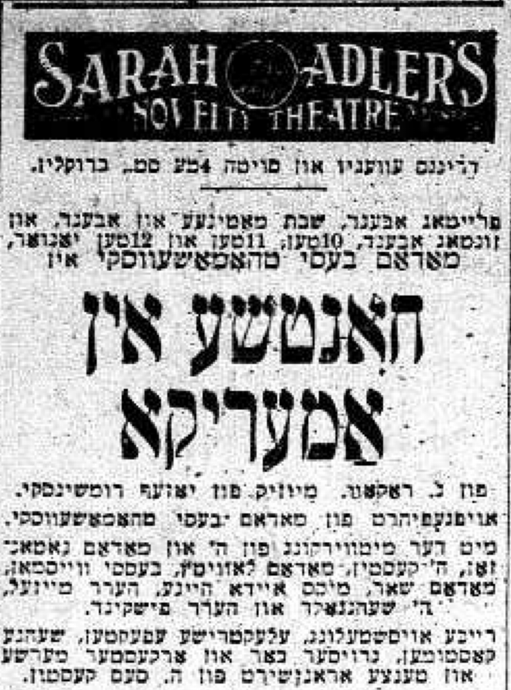

38 January 25th, 1947
Link to Forverts edition
Hard times in a theater that was established because Jacob P. Adler and Boris Thomashefsky fought with their wives.
Respectable audiences1 really enjoyed Tolstoy’s drama Kroitzer Sonata and the fine acting. Critics wrote that if you wanted to see a truly good performance with good acting, you should go to the Novelty Theater in Williamsburg. But it didn’t matter what they wrote…
For the first few weeks, business wasn’t bad2. But then it started to get worse and worse. The Jewish audiences from New York didn’t feel like going all the way out to Williamsburg to see Tolstoy’s play, and it was a real pity. This really frustrated Rudolph Schildkraut because he was sure that if we were performing in a theater in New York, the show would have been a great success and would certainly run for the entire season.
Having no other choice, we took down Tolstoy’s play, and we instead put on some melodrama called Zalmon Troubadour3. It was an older play, a German one, which Schildkraut had brought with him from Berlin. We quickly adapted the play into Yiddish and put it on, but we had no luck with this play either.
In general, we weren’t very lucky in the Novelty Theater because our expenses were very high, and the local audiences who usually came to the theater did not make a very good living themselves. A troupe like the one we had really should have been playing in a bigger theater in New York, not in some small theater in the wasteland of Williamsburg.
Even our performance of the melodrama Zalmon Troubadour was very well-done. Schildkraut played the role of a gambler who became so addicted to playing cards that it was like an illness without a cure. I played the guy who lends him money. Even in this melodrama it was a pleasure to watch him perform because he portrayed the role as no other actor could.
Even in a foolish melodrama that was as far as you could get from high literature, Rudolph Schildkraut was still able to unearth the real life essence of the character and bring out its authenticity. Indeed, he felt that theater didn’t always have to be literature, and he openly said that he used to love performing in melodramas. He could smooth out the ridiculous parts of a melodrama so that you couldn’t even tell they were there. Because he felt less constrained in this type of play, he could ham it up a lot more - on this, you could rely.
But what good was it to stage such good acting when the Jewish audiences in New York wouldn’t come all the way out to Williamsburg to see Rudolph Schildkraut perform in the Novelty Theater?
As it turned out, you might as well take the whole whole Novelty Theater on your shoulders and carry it over to New York and place it down on Second Avenue.4
It was around that time that Bessie Thomashefsky returned from Europe, and it was no longer a secret to anyone that she had divorced Boris Thomashefsky. And muddled up with this was the new young prima donna Regina Zuckerberg with whom Boris Thomashefsky was deeply in love…
As it usually went in these sorts of situations, some in our little Yiddish theater world maintained that married couples must not split up. And others said that it was for the better, because what kind of life was this for a wife who knows that her husband has a lover on the side?
Rumors swirled all around, and the slanderers, men and women alike, were busy gossiping over the love between Thomashefsky and Regina Zuckerberg, just as though there were nothing more important in the whole world… And everyone was wanted to guess: Will their love last forever, or will it not last and end just like many other affairs have ended…?
But anyone could see that, this time, Thomashefsky was truly deeply in love. And they said that it was actually better for Bessie that things ended this way, because now she could be a “star” herself. She would show him that she could build her own career without him and make an even bigger name for herself than she had now.
Upon returning from Europe, Bessie Thomashefsky felt ready to take over the whole world. Her will to show Thomashefsky that she was a better actress than ever before was so great, and she spoke about this with such confidence that you could really see that she would conquer the whole town herself and she certainly would not be disappear.
And so it indeed was.
She had her first independent performance without Boris Thomashefsky in the Novelty Theater. They took her in so she could get out of her bad situation. And as soon as she began to play her repertoire - young men’s roles, of course - audiences began to come to the theater and business actually started going well.
There was nothing at all left for Schildkraut to do in the theater - or for Sara Adler either. They had not a stitch of work. Only during the middle of the week did they, from time to time, put on Tolstoy’s Kroitzer Sonata, just to refresh themselves a little bit with a “lively word”5. But on Friday through Sunday, Bessie Thomashefsky performed and was big hit with audiences. And the most interesting thing about it was that Rudolph Schildkraut himself also would come to see Bessie Thomashefsky play her men’s roles, and he was very amused by it and applauded her enthusiastically.
He was very taken with Bessie Thomashefsky’s talent. In his opinion, she was a magnificent actress with a lot of personality and charm. It only bothered him that the same audiences that kvelled at the foolish plays she put on had no interest in better plays. He believed that anything could be good theater - dramas, tragedies, comedies, operettas, and even farces too. It just depended on how you played it. And he would proudly recount how he began his career on the German stage in slapstick comedy roles where he would sing and dance.
When Bessie Thomashefsky was playing her repertoire in the Novelty Theater, she also performed in Rakov’s new comedy, which he had especially written for her. It was called Khantshe in Amerike6, and Bessie Thomashefsky excelled in her role - she was simply in seventh heaven. The success of Khantshe in Amerike was truly a triumph for her, and she could say with even more confidence that she would conquer the town and succeed without Thomashefsky…
Rakov’s Khantshe in Amerike completely drove Tolstoy’s Kroitzer Sonata off the stage…
Rakov defeated Tolstoy, and Bessie Thomashefsky defeated Schildkraut. It was a running joke in theater circles at the time, that Rakov had defeated Tolstoy.
Bessie herself also joked about it, in her own good-natured way. And because she wanted to prove that she alone, without Thomashefsky, could draw an audience, she was a really high spirits, and her friends were also really happy for her.

And that’s how the Novelty Theater in Williamsburg became a temple for two famous Yiddish actress who were both angry with their husbands. And at the same time, the stage was itself a battlefield where Tolstoy retreated and Rakov took over…
In the comedy Khantshe in Amerike, I was given a role of an elevator man, a role with singing and dancing7. At first it didn’t seem to me that there was much I could do with this role, because everything revolves around that one little aspect. But after thinking it over, I saw that I could make something out of the elevator man - I could create a whole new theatrical persona that audiences could relate to.
While sculpting this character, as we used to say in our theater dialect, it goes without saying that I couldn’t add any heavy speeches to such a lighthearted comedy, where the whole world should revolve around Khantshe, and she should take up the whole stage. So, in my own way, I cobbled together a very interesting personage, full of quicksilver if not with life. I myself was more than amused with my portrayal of the elevator man, who doesn’t rest for a single second and is a good brother to everyone.
I remember how one of the distinguished theater critics wrote in his review that Sam Kasten is the Yiddish George M. Cohan. And this was no coincidence - while preparing for the role, I indeed took a leaf out of none other than George M. Cohan’s book. I had always admired him, and I never missed a chance to see him in a Broadway play. You could always learn something from him.
For a few weeks, the comedy Khantshe in Amerike played in the Novelty Theater with great success, and we were sure that it would certainly run through the end of the season. But suddenly all of our success vanished into thin air. Audiences stopped coming to the theater and we couldn’t attract anyone - neither with Schildkraut playing in serious dramas, nor with Bessie Thomashefsky playing in lighter comedies.
It was bad. Very bad. The managers weren’t able to pay the actors in the troupe, and weeks passed without receiving any salary at all. We were so frustrated that there are simply no words to describe it. Here was a troupe, a good Yiddish troupe, with Rudolph Schildkraut in the lead roles - and audiences weren’t coming! But it’s possible that the audiences weren’t entirely to blame; it’s possible that the audiences did want to come to see a good Yiddish play where Schildkraut could show his full glory - it’s just that they didn’t want to come all the way out to Willamsburg over New York. After all, the world portrayed in Tolstoy’s play Kroitzer Sonata was foreign to the Jewish community at large. In general, this play was only for a niche crowd, for a select audience.
But because business was going so poorly, the theater managers started arguing amongst themselves; the sholem bais in the troupe was destroyed, and nobody thought anymore that we could try and improve our dark lot by bringing in some new play. And even before the season was over, they let the whole troupe go, and we were left neither here nor there. Schildkraut was terribly disappointed, and he said that he could never have imagined that the bridge that splits up Williamsburg from New York would play such an important role in the fate of a Yiddish Theater.
– Strange! - he shook is head and slapped his knees with both hands. – Bizarre! Inconceivable!
As in, those who appreciate a higher quality↩︎
It’s worth noting that Sam’s daughter, my great-grandmother Lily, performed in at least one play with the company, Khayim in Amerike.↩︎
See an advertisement in Forverts for this play from November 10th, 1912↩︎
This translation is likely not accurate. The sentence itself was not clear to me. They indeed continued to play at the Novelty Theater in Williamsburg for more of the 1912/1913 season and did not move to Second Avenue. Perhaps this sentence is meant to be aspirational?↩︎
idiom?↩︎
There are several surviving songs from this play, including Khantshe and Sam’s song "Ikh Hob" for which we have sheet music, a recording, and a translation.↩︎
It’s worth noting that he was also the choreographer for the show↩︎